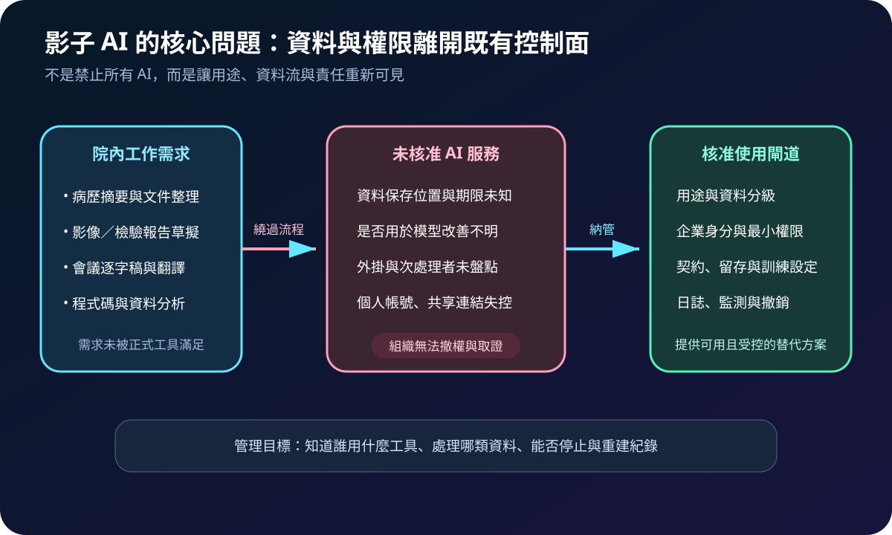
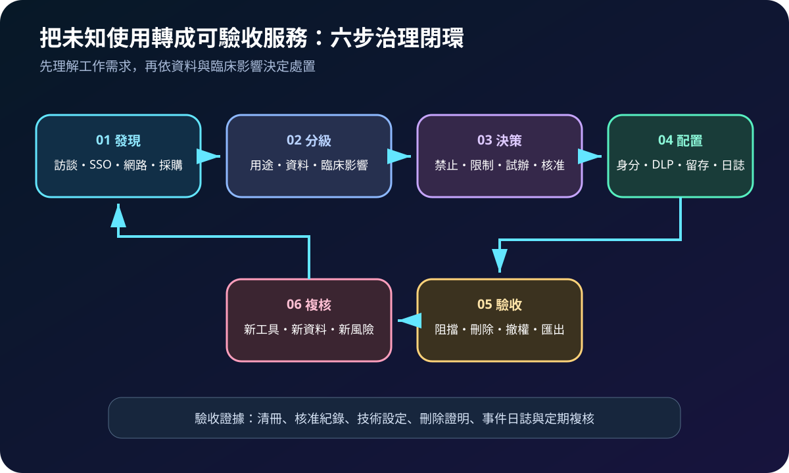
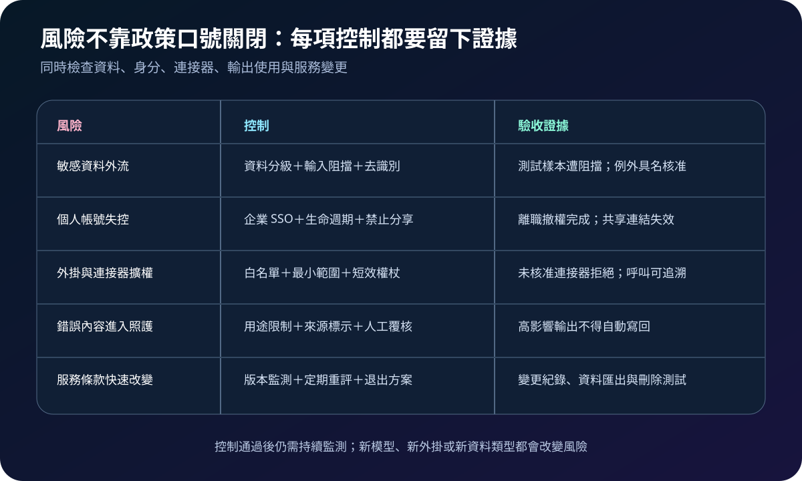

醫療資安國際觀察 · 2026-09-09
醫療影子 AI 如何納管：從未知工具到可驗收使用邊界
作者：Dr. William｜醫療資訊與資安治理實務工作者
醫療人員使用未經核准的 AI 服務處理病歷摘要、報告、會議內容或程式碼時，組織可能不知道資料被送往何處、保存多久、由誰存取，也無法在離職、事件或服務變更時完整撤權。治理重點是發現真實需求，提供受控替代方案，並對高風險資料維持明確禁止邊界。
名詞解釋：影子 AI、核准工具與資料邊界
影子 AI（shadow AI）是未被組織核准流程與系統清冊涵蓋的 AI 技術使用，包含個人帳號、瀏覽器外掛、會議助理與自行串接的 API。AI 清冊記錄工具、模型、用途、資料、擁有者與連接器；資料邊界定義哪些資料可輸入、須去識別或不得離開受控環境；核准閘道則把身分、契約、技術設定與監測連成可撤銷的使用路徑。
國際現況與適用邊界
英國 NCSC 於 2026 年 9 月 7 日指出，影子 AI 是未被核准系統與流程涵蓋的 AI 使用；當正式政策無法滿足工作需求，人員可能先採用消費型服務，使資料保存、服務改善用途及攻擊面離開既有治理。NCSC 的重點不是假設影子 AI 可完全消失，而是透過安全文化、需求理解與受控替代方案降低風險。美國 NIST IR 8596 初稿則以 CSF 2.0 架構整理 AI 元件安全、AI 輔助防禦與 AI 攻擊風險，可作為清冊、供應鏈與控制責任的參考框架。
法域與效力：NCSC 資料反映英國官方資安建議，NIST IR 8596 是美國自願性框架的公開初稿，均不是台灣醫療機構的直接法定義務。台灣醫院可採用其發現、清冊與風險控制方法；病歷、個資、醫療決策、跨境傳輸及雲端使用仍須依本地法規、主管機關要求、契約與個案風險確認。
規劃：先理解用途，再決定禁止或核准
盤點應涵蓋臨床、研究、行政、資訊與委外人員，並結合匿名需求訪談、SSO、網路、瀏覽器、費用報支與採購訊號。每個用途至少記錄輸入資料、輸出流向、臨床影響、外掛、資料保存、帳號模式及責任人。處置可分為禁止、限制、隔離試辦與正式核准；驗收指標可採清冊涵蓋率、敏感資料阻擋率、企業帳號使用率、未核准連接器拒絕率、撤權完成時間及定期複核完成率。

實作：建立可見、可限制、可撤銷的使用路徑
- 發布資料規則：以具體範例標示病歷、影像、檢驗、身分資料、會議紀錄與程式碼的允許、去識別及禁止條件。
- 提供核准入口：以企業 SSO、受管理瀏覽器或 API 閘道提供已評估服務，停用個人帳號共享與公開連結。
- 限制資料與連接器：配置 DLP、外掛白名單、最小 OAuth 範圍、短效權杖及必要的輸入遮罩；高影響系統不得由未核准 Agent 直接寫入。
- 驗證供應條件：確認資料位置、保存、刪除、服務改善用途、次處理者、事件通知、資料匯出與終止後處理。
- 監測並回饋：以彙總趨勢找出缺少的正式工具，不以單純懲處取代教育；新模型、外掛或條款變更時重新評估。
風險：看見使用不等於取得合法處理基礎
深度監測員工輸入可能另增隱私與勞動關係風險；阻擋所有 AI 網域也可能誤傷核准服務或讓人改用私人裝置。去識別若只刪除姓名，仍可能由罕見病況、日期與地點重新識別；企業方案若預設允許外掛或長期保存，也不會自動安全。控制應符合比例原則，限制監測內容與存取人員，並以測試資料驗證阻擋、刪除、撤權、匯出及事件追查。

可執行清單
- 能否列出院內已知 AI 工具、用途、資料類型、連接器與責任人？
- 人員是否知道哪些資料禁止輸入，並有可用的核准替代工具？
- 核准服務是否使用企業身分、最小權限及受控分享設定？
- 契約是否說明保存、刪除、訓練用途、次處理者、事件通知與退出？
- DLP、連接器白名單、撤權與資料刪除是否以測試案例驗收？
- 監測是否符合比例原則，並可把高頻需求回饋到正式服務規劃？
來源
- UK NCSC｜The hidden risks of shadow AI（發布：2026-09-07；查閱：2026-09-09）
- NIST｜IR 8596 Cybersecurity Framework Profile for Artificial Intelligence（初稿）（發布：2025-12-16；規劃更新：2026-04-21；查閱：2026-09-09）
內容說明
本文依健康台灣深耕計畫相關治理內容整理，並參考 NCSC 與 NIST 公開資料，提出台灣醫療機構可採用的影子 AI 發現、資料分級、核准與驗收框架；不取代主管機關公告、法律意見、個資影響評估、臨床治理或個別系統風險判定。